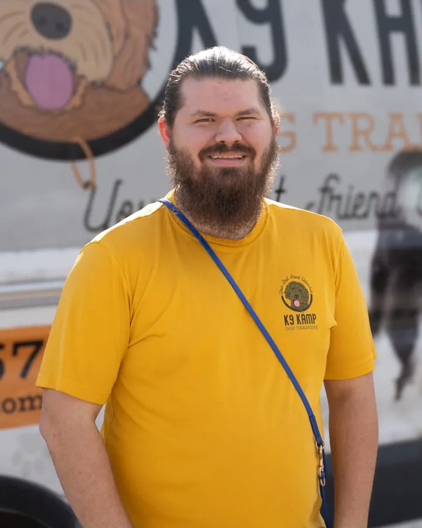

Dog training company
- Problem
- A dog trainer whose results speak for themselves, but whose feed didn't show them.
- What we made
- Talking-head reels with the owner, filmed during real training sessions with the dogs.
- Result
- [RESULT: real numbers only]